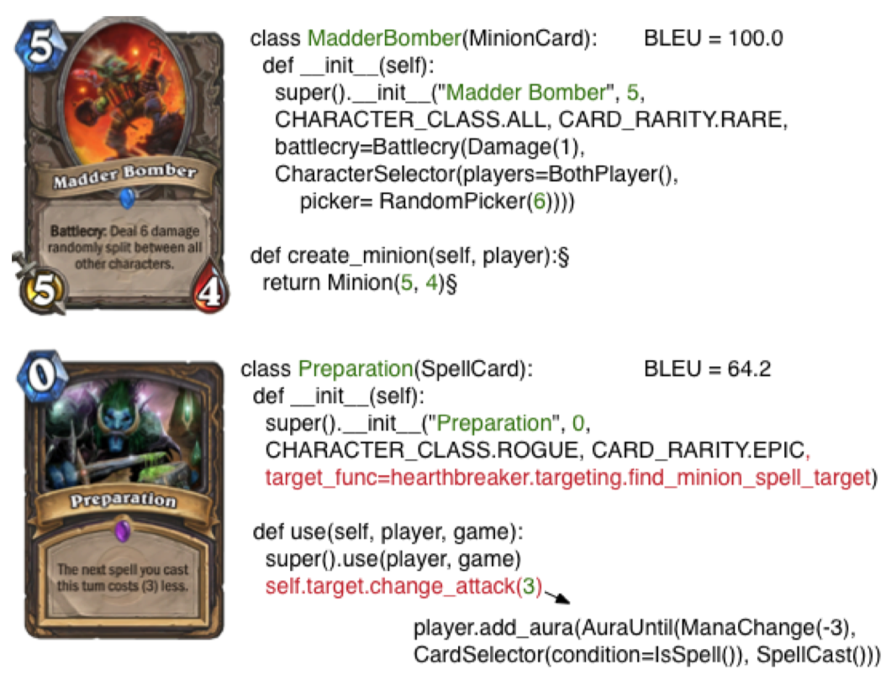
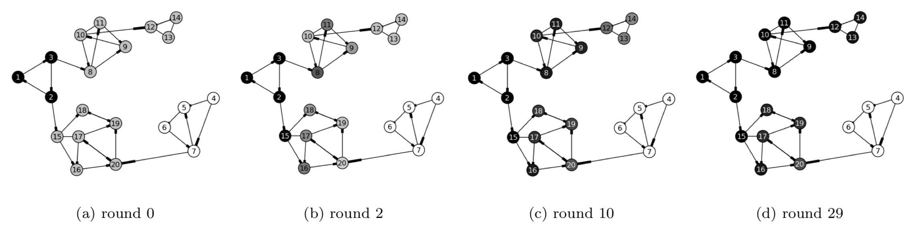

I am Fumin at Google DeepMind working on Robotics and Vision.
Shortly before, my research focused on Natural Language Processing and Games.
My other interests include Distributed Systems and Computer Graphics.
Shortly before, my research focused on Natural Language Processing and Games.
My other interests include Distributed Systems and Computer Graphics.

Publications
Leveraging Demonstrations for Deep Reinforcement Learning on Robotics Problems with Sparse Rewards, arXiv:1707.08817
This work demonstrates robust behaviour of robots against errors and variations in the environment.
Force feedback allows the robot to recover from mistakes along its trajectory, in contrast to conventional scripting methods.
More information can be found in this RSS talk.
Grounded Language Learning in a Simulated 3D World, arXiv:1706.06551
This work demonstrates language understanding through Reinforcement Learning in a sensory rich environment.
Through task solving, the agent is able to generalize to the combinatorial number of sentence constructs, a key feature of human language.
Latent Predictor Networks for Code Generation, Association for Computational Linguistics, 2016, arXiv:1603.06744
This work shows that neural networks can learn utilities of cards from their linguistic description in the games "Magic the Gathering" and "Hearthstone".
Modeling the diffusion of preferences on social networks, SIAM International Conference on Data Mining, 2013, pdf
This work provides a social network model that captures the real world phenomenon of opinion leaders influencing opinion followers.
As a result, it answers questions such as given the initial beliefs of the leaders and the global structure of the social graph, what would be the long term opinions of each and every member in this network.
